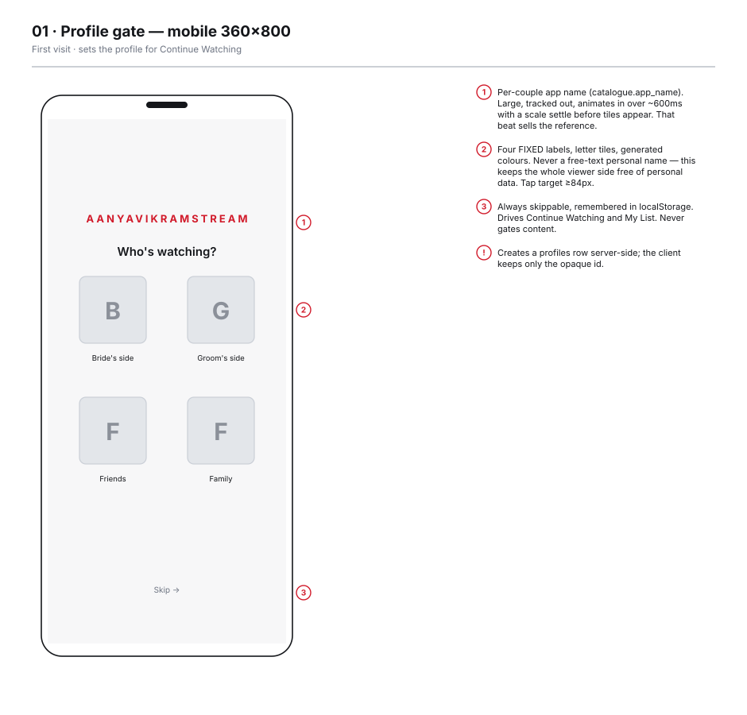
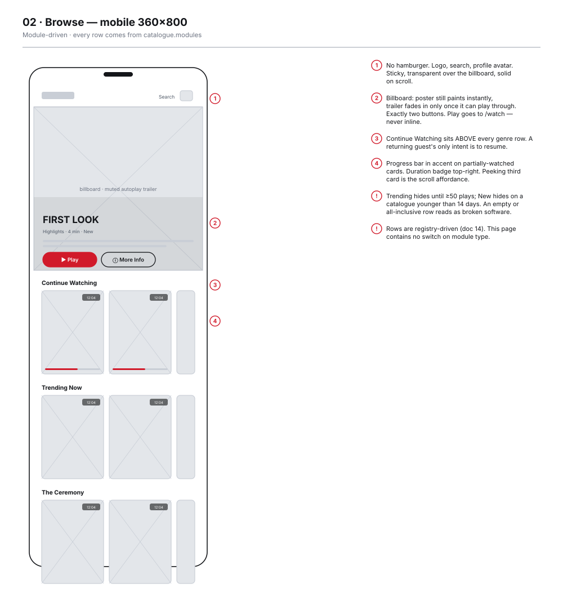
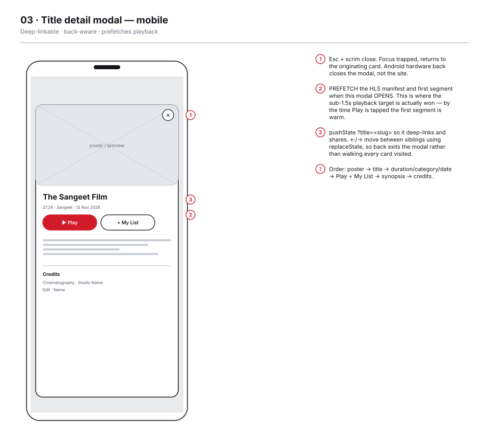
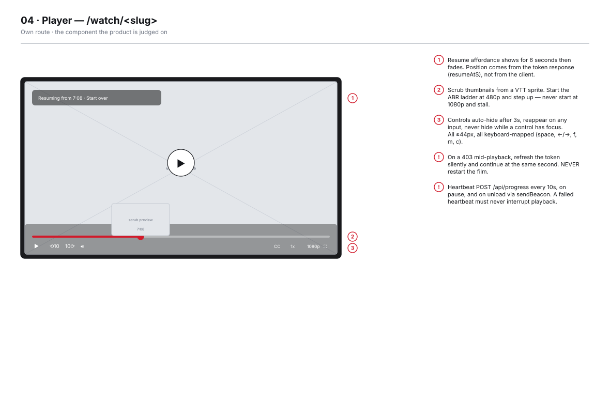
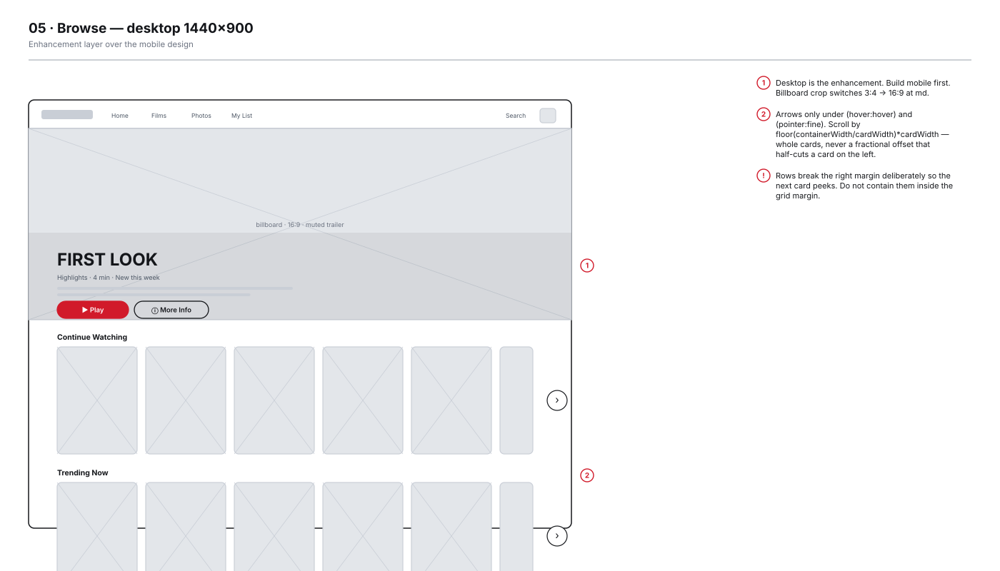
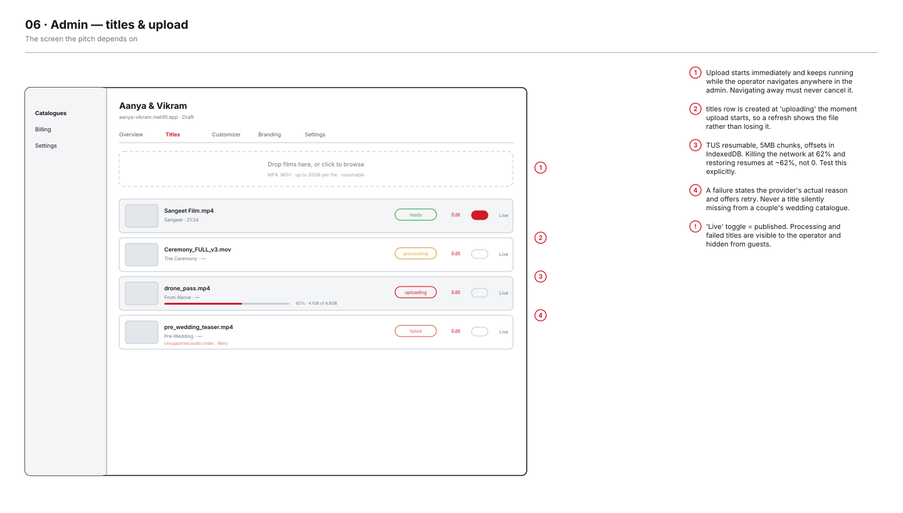
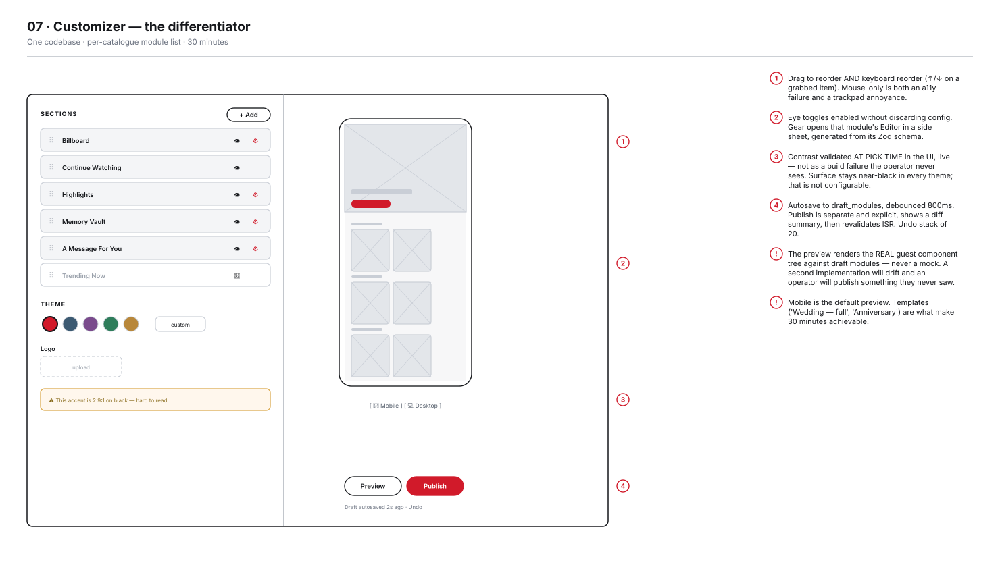
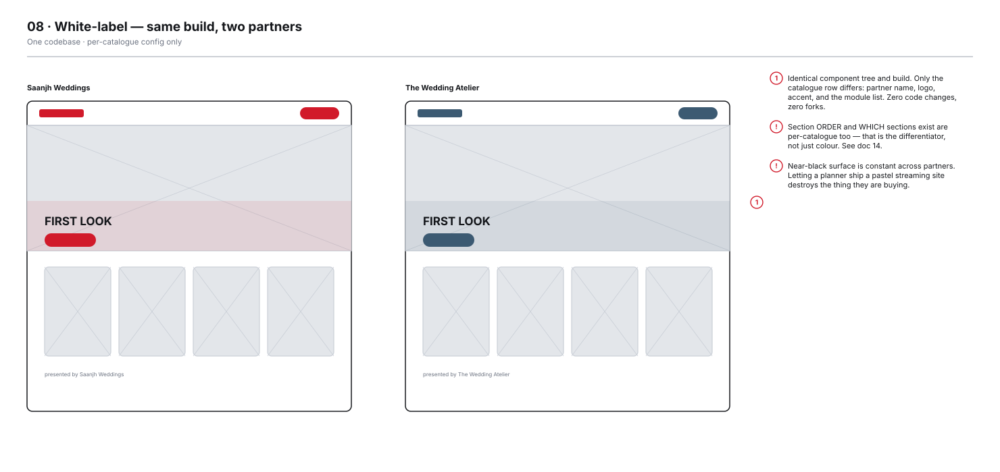

01 · Profile gate — mobileFirst visit · sets the profile for Continue Watching
02 · Browse — mobileModule-driven · every row comes from catalogue.modules
03 · Title detail modal — mobileDeep-linkable · back-aware · prefetches playback
04 · PlayerOwn route · the component the product is judged on
05 · Browse — desktopEnhancement layer over the mobile design
06 · Admin — titles & uploadResumable upload · transcode status · publish toggle
07 · Customizer — the differentiatorModule list · live preview · draft & publish
08 · White-label — same build, two partnersOne codebase · per-catalogue config only